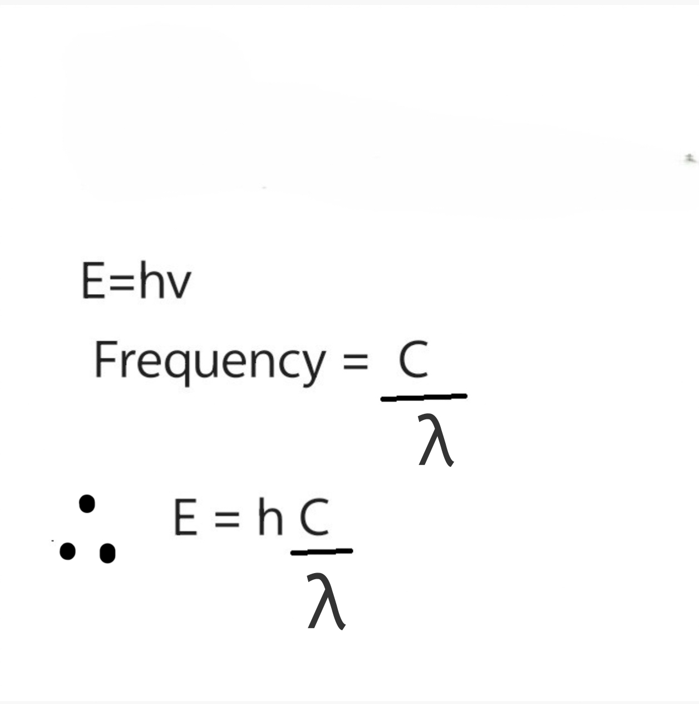
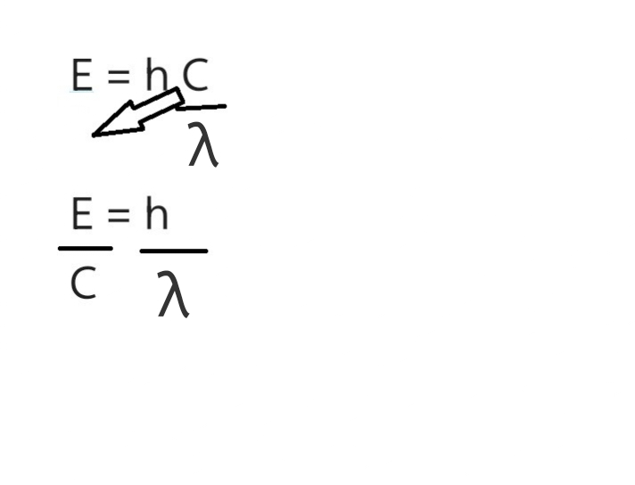
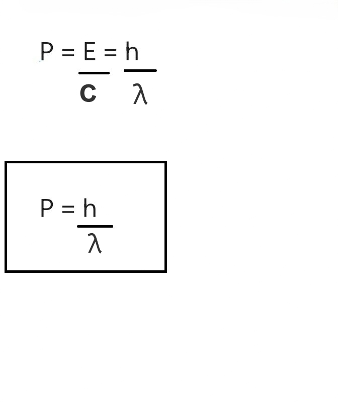
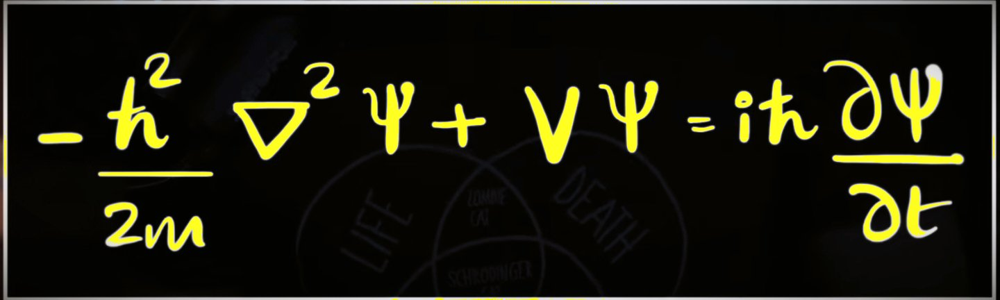
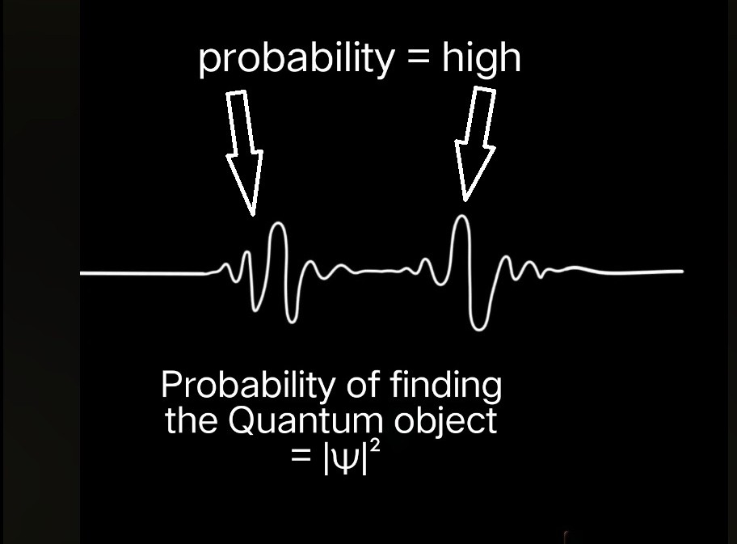

Heisenberg's Uncertainty Principle
The Core Concept
The Heisenberg Uncertainty Principle is a fundamental limit in quantum mechanics. It states that one cannot simultaneously know the exact position and momentum of a particle with perfect precision.
Δx ⋅ Δp ≥ ℏ / 2
Where:
Δx is the uncertainty in position,
Δp is the uncertainty in momentum, and
ℏ (h-bar) is the reduced Planck constant (≈ 1.054 × 10⁻³⁴ Js).
Classical vs. Quantum
 Localization: High✅ | Velocity: Low certainty❌
Localization: High✅ | Velocity: Low certainty❌
 Localization: Low ❌| Velocity: High certainty✅
Localization: Low ❌| Velocity: High certainty✅
In the first photo of a moving ball took by a highspeed camera we can see the ball's position clearly, but we don't know where it heading to- means we have no idea about it's velocity. But the second image is a long exposure photo of the same ball, Now we can see it's direction and can estimate it's speed as well, So we got the velocity but we don't know the position of the ball so now we lost the location. If the uncertainty in finding the location of an object is very tiny, then the uncertainty in finding it's, momentum is very high and vice versa. This is similarly how elementry particles like electrons behave.
In our everyday world, if we have a powerful enough camera, we can capture a ball's position and speed at once. This is just a technological limitation. However, Heisenberg proved that in the quantum realm, this isn't about better technology—it's a fundamental property of nature. There is also a misassumption that when we measure an electron we actually disturbes it's position like photon hitting electron thus disturbing it's momentum and we get it's position but lost momentum when we measure it. But that is just a misassumption uncertainty principle has nothing to do with measurement.-----------------------
Wave-Particle Duality
-----------------------
You may have already learned wave particle duality in the earlier lessons. But their is common misunderstanding that a quantum particle can be both particle and wave simultanously but it is not, If a object shows two different properties of two different objects it does not mean that it is being two objects at the same time , But it is just a different object having similar properties of two other objects. In terms of electrons it comes in lumps which is a property very similar to a particle, but they are not particle because they do certain things that no normal particles do Eg:The famous double slit experiment you learned earlier---Double-Slit Experiment---, This experiment shows that when an electron passes through two slits and hit on a screen you will get a result which no particles could do which is the interference pattern and this is a pattern that you will get from waves so electrons have properties like deffraction, properties like we traditionaly associates with waves. But they are not waves because they do not come in lumps they are continous which means they are neither waves nor particles they are their own different objects and like how electrons are being different there are other objects behaving same as electrons like photon,protons neutrons etc.., So the physics of them are same so we call them Quantum objects- They are neither particles nor waves, They share properties of both particles and wavesStems from Wave-Particle Duality.
Momentum and Position
Time Around 1900s Where we found what light
was. At that time we thought light was electromagnetic wave and thought everything was solved, Later we
ran into some experiments like the photoelectric effect, black body radiation etc.., that could not be
explained by the current wave theory. Max Planck and Albert Einstein brought up this problem, they
played major roles in showing that the classical theory of light was incomplete. They realize that light
must be coming in lumps as well. The energy of light has to be E = hν, E= energy, h= Planck's constant,
ν= frequency of light. This equation was a hypothesis at first but later experiments like photoelectric
effect proved that to be true.
Later, De Broglie came up with an expression that connects momentum
and wavelength p = h/λ, Given below is the equation.


Therefore momentum is also equal to planck's constant divided by wavelength. So now we get the expression that connects momentum and wavelength.

The thing that excited De broglie was that if light what we thought was a wave happens to have particle like properties maybe objects like electrons which we thought were particles have wave properties and also have wavelength associated with it. This was the hypothesis that De Broglie put forward. Back then it was just a hypothesis but today we have verified it. This equation to find momentum is applicable for all Quantum objects.
Position Of quantum objects
We have find the momentum for quantum objects, Now what about position? When we figure out the hypothesis
that these electrons can have wavelength a question was raised that if electrons have wavelength then
they should also have a wave equation. That when schrodinger came up with his schrodinger equation which
we calls today the schrodinger's wave equation and after a decade of that he came up with the famous
schrodinger's cat experiment---Schrodinger's cat

This equation encapsulates most of the properties of these quantum objects. This equation give us a probability wave

This is an electron itself, Until you measure it electron is a spread of probability, As you can see from the figure the probaility to find the electron is higher on the excited state(peaks and valley) and lower or zero on the ground state. The probability of finding the quantum object is equal to the square of the wave function(peaks and valleys) of that particular area. They don't really have a position until you measure it, till then it is a spread of probability. It is inherently probabilistic.
Wave Nature and Momentum
Now we understand momentum and position of these quantum objects, Now let's see how they are related to each other. If we imagine an electron with a specific value of momentum then it must be moving in a constant velocity, like in the image given below.

 A perfect wave has undefined position (Δx = ∞)
A perfect wave has undefined position (Δx = ∞)
Localizing the Particle
We should localize the electron to find it, but how do we do that? We can use a wave packet which is a combination of waves that constructively interfere at a specific point and destructively interfere everywhere else.
There will places where peaks and peaks line up which will result in constructive interference and some places the peaks and valleys line up together resulting in destructive interference. When we do that we end up with a new wave. Now there are places where amplitudes are high and low, So now we narrowed it down. Now the wave is not consistent and reduce the uncertainty in position but it comes in a cost. When we add two waves of different wavelength to narrow down the amplitudes now we have two values for momentum. Now if we measure this particular electrons momentum there is 50-50% chance to having it to be either one of them so now the uncertainty in momentum has increased.
 Constructive and destructive interference cause by adding two waves with
different wavelength
Constructive and destructive interference cause by adding two waves with
different wavelength
 A highly localized particle contains many momentum states
A highly localized particle contains many momentum states
Beyond Measurement
A common misconception is that the principle is just about the "observer effect"—the idea that measuring something disturbs it. While measurement does disturbs quantum systems, the Uncertainty Principle is deeper: it's a fundamental trade-off in the fabric of reality itself.
- Spread vs. Precision: Precision- refers to narrowness of the probability distribution, (particle's state). Spread-It's about the inherent spread of properties. The physical manifestation of uncertainty principle: When you localize a particle to increase it's position precision, It's wave function physically spreads out in momentum and vice versa.
- Quantum Stability: It allows everything in the universe to exist in a stable state.
Stabilizing the Atom

The Uncertainty Principle is what keeps atoms from collapsing. In classical physics, an electron circling a nucleus should radiate energy and spiral inward because the electrons are charged particle so charged particles when they accelerate they should loose energy to radiation.
As an electron gets closer to the nucleus, its position becomes more certain thus reducing the uncertainty in position.

This causes its momentum uncertainty (and thus its kinetic energy) to skyrocket which can proppel it outwards. This "quantum pressure" prevents the electron from falling in to the nucleus,

That's the reason electron has some energy to stay away from the nucleus and that's why today we think of it in terms of an electron cloud.
Learn more about Orbitals